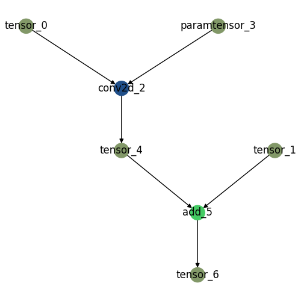

How to convert your ML model and compile it¶
The document describes the steps to convert a machine learning (ML) model into a dynamic library that can be used for deployment on a target device. The process involves two steps:
-
Converting the ML model (Pytorch, for now) into a networkx model and allocating each operation into one or multiple devices
-
A user provides a machine learning model (implemented using the PyTorch framework) to convert into a graph representation using the torch2nx library. The output is then saved in the "gpickle" format. The "gpickle" format is a serialization format that is commonly used in Python to store networkx graphs.
-
User creates a "json file" that maps operations within the graph representation of the model to specific devices, such as GPUs or CPUs. This information can be used to optimize the execution of the model on different devices. 1
-
-
Takes above mentioned files (gpickle and json) and then converts into binary (TO BE REWRITTEN BELOW)
- initialize graph module
- allocate kernel
- kernel compile
- graph split
- extract representative dataset
- export to runtime
- convert onnx
convert ML model to networkx model¶
how to create gpickle file for networkx model¶
To prepare for using the torch2nx library, you need to do two things: install the package and be ready to provide a model.
-
Installation: You need to install torch2nx and be able to import zaiConverter.
-
Model Preparation: You need to provide a PyTorch model as a torch.nn.Module instance and sample input data (as a list, and the order must match the order of arguments in the forward method of the provided model). Here is an example:
import torch
import torch.nn as nn
class SampleModel(nn.Module):
def __init__(self):
super(SampleModel, self).__init__()
self.conv = nn.Conv2d(3, 1, 3, 1, 1, bias=False)
def forward(self, x, y):
out1 = self.conv(x)
out2 = out1 + y
return out2
# model and sample_input_data will be used in the below code block
model = SampleModel()
sample_input_list = [torch.rand(1, 3, 32, 32), torch.rand(1, 1, 32, 32)] # shape of each arguments matches with that of tensor x and tensor y
Now, you can provide the model and sample data to get a gpickle file using the torch2nx library.
import zaiConverter
from zaiConverter.pytorch_module import converter
# Convert model to Networkx specification
need_gpu = True # or False
temp_gpickle_save_filename = "<SOME PATH WHERE GPICKLE WILL BE SAVED>"
graph_converter = converter.Torch2GraphConverter(tf_flip=True, torch_flip=False)
nx_graph = graph_converter.convert(
model=model, fake_torch_data=sample_input_list, gpu=need_gpu
)
graph_converter.reset_module()
graph_converter.export_to_gpickle(temp_gpickle_save_filename, nx_graph)
The device allocation JSON file is a JSON file that indicates which device (processor) is assigned to each operation in the graph.
For example, if the above "SampleModel" contains two operations - convolution and add - you need to allocate the available device(s)/processor(s) in your target device to the two operations.
The required JSON file has key-value pairs, where the key is the operation name and the value is the allocated device. The supported devices are 3:
- "X86",
- "X64", (Tested)
- "ARM",
- "ARM64",
- "NVIDIA",
- "AMDGPU",
- "INTELGPU",
- "MALI",
- "ADRENO",
- "HEXAGON", (Tested)
- "MYRIAD",
- "ARA1",
- "TPU",
- "CV22",
To generate the JSON file, you need to create a template JSON file with a default device.2
import pickle
import networkx as nx
import json
# Create json file #
model_json_filename="<SOME PATH WHERE JSON WILL BE SAVED>"
default_device="<SOME DEVICE>" # You must select among above candidates
alloc_dict = {}
with open(temp_gpickle_save_filename, "rb") as f:
generalized_graph = pickle.load(f)
for node_name in nx.topological_sort(generalized_graph):
nx_dict = generalized_graph.nodes[node_name]["data"]
if nx_dict["kind"] == "OpNode":
alloc_dict[node_name] = (
default_device + ":0"
)
with open(model_json_filename, "w") as f:
json.dump(alloc_dict, f)
Then, you will get a JSON file like this:
{"conv2d_2": "X64:0", "add_5": "X64:0"}
You can customize this JSON file as you wish, for example, the following JSON file indicates that the convolution operation runs on hexagon and then adds tensors on an x86-64 architecture processor:
{"conv2d_2": "HEXAGON:0", "add_5": "X64:1"}
Graph visualization
Device allocation becomes much easier with a visual representation of the graph. To visualize the graph, you need to install pygraphviz.
# (Linux)
sudo apt-get install graphviz graphviz-dev
pip install pygraphviz
# (For other OS, please refer to https://pygraphviz.github.io/documentation/stable/install.html)
The following code shows you how to allocate each operation using a graph illustration. 4
from pathlib import Path
visual_graph_dir = "<SOME DIRECTORY PATH WHERE VISUALIZED GRAPH WILL BE SAVED>"
visual_graph_filename = "<VISUALIZED GRAPH FILENAME>"
graph_converter.plot_network(Path(visual_graph_dir), visual_graph_filename, \
model_json_filename, figsizenum=5)
Then, you may get an image that illustrates the subgraph allocated model graph. There will be (n+1) colors, where "n" is the number of devices used in the JSON file, and one color represents all tensors (either dynamic or static). By controlling the figsizenum (from 5 to about 40), you can adjust the size of the image.

compile¶
The OptimaV2 Manager is an entrypoint class to the entire OptimaV2 optimization and compilation process. The user only needs to provide the following information.
- The name of the model.
- List of devices to use. Provide as list of optimav2.devices.DeviceEnum enumeration. (TODO: 사용할 지 정하기)
- Gpickle file extracted from torch2nx. Explained above.
- Directory of where to dump compilation outputs.
- JSON file that denotes where each kernel is allocated to each device. Explained above.
- (Optional) Representative Dataset if SNPE is used.
Invoking the optimize method of the manager class will run the entire OptimaV2 optimization process. Parameters are to be given like below. (TODO: 조금 더 Formal 한 방식으로 function template 제공 방법 찾아보기)
def optimize(
self,
module_name: str, # Name of module
device_info: List[devices.DeviceEnum], # List of all devices to be considered.
model_graph_or_gpickle: Union[str, DiGraph], # Path of model gpickle extracted from torch2nx.
output_folder_dir: str, # Path of output directory compilation resutls will be exported to.
device_alloc_per_kernel_json_dir: str, # JSON file containing operation to device mapping.
sample_inputs: Optional[List[Tuple[torch.Tensor]]] = None, # Optional Representative Dataset
need_gpu=False, # (Float16 only) Pass "True" when float16 models are converted.
):
Sample Usage of Manager class
# Import Manager from optima_v2
from optima_v2.manager import Manager
from optima_v2.devices import DeviceEnum
# ...
manager_instance = Manager()
manager_instance.optimize(
"MediapipeNet",
[
DeviceEnum.DEVICE_KIND_HEXAGON,
DeviceEnum.DEVICE_KIND_X64,
],
"~/models/mediapipe/mediapipe.gpickle",
"~/outputs/",
"~/models/mediapipe/mediapipe_allocation.json",
representative_data,
)
After invoking this function,
Expected Output Tree
~/outputs/MediapipeNet/
|- model.meta (metadata)
|- Subgraph_0\
|- Subgraph_1\
|- ...
|- Subgraph_i(OpenVino)\
| |- subgraph_i.blob
|
|- Subgraph_j(SNPE)\
| |- subgraph_j.dlc
|
|- Subgraph_k(LLVM)\
| |- <subgraph_name>.meta
| |- <kernel_1_name>.so
| |- <kernel_2_name>.so
| |- ......
|
|- Subgraph_o(SPIRV)\
|- <subgraph_name>.meta
|- <kernel_1_name>.spv
|- <kernel_2_name>.spv
|- ......
Notes on Representative Data¶
The format of representative dataset is as follows
List[Tuple[torch.Tensor]]]
The example below illustrates how representative data is collected.
repr_data = []
for input_tuple in some_dataset_iterator:
# get input_tuple
repr_data.append(input_tuple)
output = model(*input_tuple)
# Sample of how this input will
# ...
manager_instance = Manager()
manager_instance.optimize(
"MediapipeNet",
[
devices.DeviceEnum.DEVICE_KIND_HEXAGON,
devices.DeviceEnum.DEVICE_KIND_X64,
],
"~/models/mediapipe/mediapipe.gpickle",
"~/outputs/",
"~/models/mediapipe/mediapipe_allocation.json",
repr_data,
)